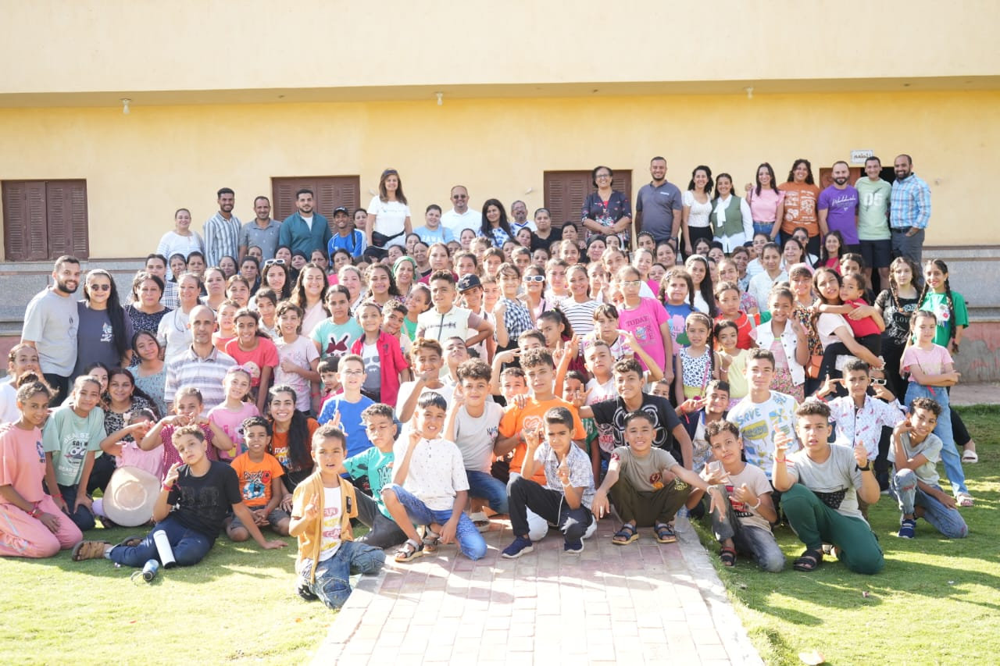

خدمة إنسانية مسيحية تسعى لتوصيل محبة يسوع العملية
نكشف لكل طفل قيمته الحقيقية من خلال محبة يسوع
نرافق الأطفال الأيتام والمهمشين في رحلة التغيير والنمو
شاهد كيف نصنع الفرق في حياة الأطفال
خدمة إنسانية مسيحية تسعى لتوصيل محبة يسوع العملية واحتضان الأطفال الأيتام والمهمشين
نقدم خدمات متنوعة للأطفال والسيدات والخدام من خلال التعليم والتلمذة والأنشطة المختلفة
نحن هنا للإجابة على استفساراتك ومساعدتك في الانضمام إلى رحلتنا في خدمة المجتمع
انضم إلينا في رحلتنا لصنع فرق في حياة الأطفال والمجتمع
ادعم خدمة كنوز لنصل إلى المزيد من الأطفال والعائلات.